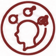

Each virtual lab opens the interactive simulation from the lesson. Predict first, then test, then explain what you notice.
🖥️ Too many birds!
SimulationOverpopulation in a food chain Teamwork
Teamwork
TeamworkQuestions to discuss (with answers)
- What happens to the spiders with 30 birds? → They crash: the birds eat them faster than they can reproduce.
- Why do the lizards decrease too? → Lizards also eat spiders. With fewer spiders, there is less food for them.
- What happens to the birds in the end? → They decrease too: overpopulation damages their own food supply.
🖥️ Rescue the oryx
SimulationSave a species from extinction

Critical ThinkingYou look after a population of Arabian oryx. Each event changes the population. Watch the status: safe, threatened, endangered… or extinct.
🧪 Mice in winter
LabLess food, smaller populationTeamwork Self-Regulation and Discipline
Self-Regulation and Discipline
TeamworkSelf-Regulation and DisciplineYou need: 40 dried beans (the food) · 20 paper clips (the mice) · a cup · a pencil
Method
- Each mouse needs 2 beans to survive one season.
- Summer: put 40 beans in the cup. How many mice can survive?
- Winter: there is less food. Put only 16 beans in the cup.
- Flood: half of the winter food is washed away. Use 8 beans.
Safety: do not eat the beans or put them in your mouth. Wash your hands afterwards.